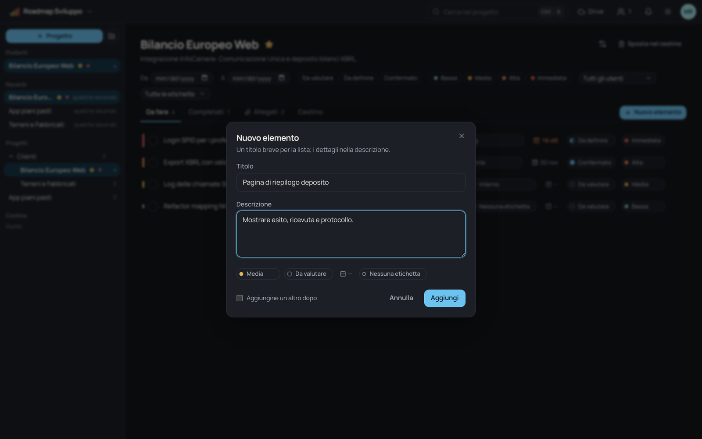

Elementi che si leggono a colpo d'occhio
La barra colorata a sinistra di ogni riga cresce con la priorità: la lista si legge come un istogramma di urgenza, senza etichette da decifrare.
Bassa Media Alta Immediata
- Stato: da valutare, da definire, confermato
- Scadenza facoltativa, con evidenza di quelle vicine o passate
- Etichette personalizzate per nome e colore Bug Cliente
- Filtri per periodo, stato, priorità, utente ed etichetta
